In China Employee Termination in 2026: Checklist-Led Payroll Playbook for Foreign Employers
Key takeaways
- In China employee termination, most expensive errors are control failures: weak evidence, unclear ownership, and rushed payroll release of contested components.
- A checklist-led playbook helps foreign employers convert legal requirements into repeatable execution decisions.
- Use pre-release triage and post-release stabilization checklists to protect both payroll quality and dispute defensibility.
- Keep contested items out of automatic in-cycle processing unless approvals and treatment logic are complete.
- Where local implementation is unclear, tag uncertainty and confirm before release.
Why checklist discipline matters more than policy summaries
Foreign employers rarely fail because they never heard the rules. They fail because execution under deadline pressure is inconsistent across HR, manager, payroll, and vendor teams. A case may have reasonable legal basis on paper, but if the handoff chain breaks—missing records, mismatched communication, late approvals—the payroll output becomes risky even when the numeric formula looks correct.
Checklist discipline is the practical antidote. It makes release criteria explicit, reduces judgment drift, and helps cross-border teams run termination cases with predictable quality. In other words, checklists are not bureaucracy; they are decision controls that prevent avoidable cost and escalation.
Pre-release triage checklist (go/no-go)
Before any final termination payout is released, complete this triage set:
- Basis integrity: legal basis code and supporting records complete.
- Component clarity: final-pay items clearly classified (salary, leave payout, severance, adjustments).
- Approval integrity: HR, payroll, and business approvals captured in-system.
- Treatment note completeness: component-level treatment assumptions documented.
- Communication alignment: employee-facing explanation matches payroll coding.
- Exception isolation: unresolved items separated from standard in-cycle release.
If any critical item is incomplete, trigger exception checklist instead of proceeding automatically.
Regulatory baseline (concise)
The Labor Contract Law provides the primary framework for termination handling, severance, and potential compensation exposure. The Social Insurance Law supports obligations relevant to termination-month closure and related processing consistency. Technical tax references support payroll treatment documentation for final-pay components. Across sources, one point is consistent: process and evidence quality shape real risk outcomes for multinational employers.
What remains uncertain is typically implementation detail—city-level evidentiary expectations and handling of unusual component scenarios. Manage this through explicit local confirmation steps, not implicit assumptions.
Role handoff map (who must do what)
HR owner checklist
- Open termination case file and assign risk tier.
- Validate legal-basis documentation completeness.
- Prepare aligned employee communication template.
- Confirm archive requirements and closure owner.
Manager owner checklist
- Submit rationale and required supporting records.
- Confirm business decision and approval timing.
- Coordinate handover and operational transition facts.
Payroll owner checklist
- Build versioned final-pay worksheet.
- Map each component with treatment notes.
- Reconcile release file with approved case summary.
- Store run output with traceable version metadata.
Vendor/EOR owner checklist (if applicable)
- Validate local implementation and filing sequence.
- Confirm format and timing constraints.
- Escalate uncertain local points with ETA for confirmation.
Scenario mini-cases (checklist in action)
Scenario A: late severance instruction from business
Business requests a late change to severance amount shortly before payroll lock. Triage shows approval integrity is incomplete and communication alignment is red. Action: keep uncontested components in standard processing, move disputed item to exception route with documented timeline.
Scenario B: employee challenges termination reason wording
After draft communication is prepared, HR detects mismatch with internal coding used in payroll worksheet. Action: stop release, correct case summary, re-approve, then proceed. This prevents immediate credibility damage and later reconstruction work.
Required document checklist
| Document | Owner | Control purpose |
|---|---|---|
| Case summary with basis code | HR | Single source of truth |
| Contract and amendments | HR | Component and tenure validation |
| Evidence packet | Manager + HR | Defensibility |
| Versioned payment worksheet | Payroll | Calculation traceability |
| Approval records | HR/Payroll/Business | Release governance |
| Employee communication record | HR | Message consistency |
| Payroll output and reconciliation | Payroll | Execution proof |
| Closure confirmations | HR Ops/Vendor | Full process completion |
Exception handling checklist
When triage fails, apply the following sequence:
- Classify exception type (missing evidence / disputed basis / late approval / unclear treatment).
- Freeze contested components from standard run.
- Assign named exception owner and response deadline.
- Communicate interim status using approved template.
- Obtain required confirmation or approvals.
- Release through controlled off-cycle path if needed.
- Record root cause for process improvement.
System implementation checklist
- Mandatory risk-tier field before payout release.
- Standardized reason-code dictionary for termination basis.
- Approval workflow with authority matrix and timestamps.
- Immutable worksheet versioning and change log.
- Exception dashboard with aging and ownership.
- Archive completeness score at closure.
- KPI tracking: exception rate, off-cycle ratio, dispute incidence.
Post-release stabilization checklist
After payout, run a short stabilization cycle:
- Confirm payroll output matches approved package.
- Verify communication delivery and query handling logs.
- Complete offboarding-related closure steps.
- Check archive completeness and retrievability.
- Log lessons learned and assign preventive actions.
This post-release step is where many teams underinvest. Yet it is critical for avoiding repeated failure patterns.
Common mistakes and prevention
- Mistake: “Urgency equals approval.”
Prevention: require triage completion before release.
- Mistake: mixing contested items into normal run.
Prevention: isolate exceptions with explicit owner.
- Mistake: communication finalized after payroll input.
Prevention: enforce alignment check before release.
- Mistake: closure without archive verification.
Prevention: use archive completeness scoring.
What to do now (10 actions)
- Publish pre-release triage checklist.
- Publish exception handling checklist.
- Define release authority matrix.
- Standardize case summary and payment worksheet templates.
- Enforce in-system approval capture.
- Add communication alignment checkpoint.
- Launch exception dashboard.
- Run monthly quality review on termination cases.
- Train managers on evidence expectations.
- Refresh local confirmation channels quarterly.
What to watch next
Foreign employers should watch for shifts in local dispute handling practice and evidence expectations. Execution quality, not document volume, remains the key advantage. Teams that use concise, enforceable checklists usually outperform teams that rely on ad hoc heroics during payroll lock windows.
FAQ
1) Why use a checklist format for termination?
Because termination risk is operational and recurring; checklists make release criteria consistent.
2) Can we skip exception workflow when business pressure is high?
Skipping exception controls often increases legal and payroll risk. Controlled routing is safer.
3) Who owns final release quality?
Shared ownership across HR compliance, payroll lead, and authorized business approver.
4) How should EOR users apply this?
Define client/EOR ownership by checklist item and track completion in one case file.
5) Does this replace legal advice?
No. It is an execution framework and should be paired with qualified local advice.
Disclaimer
This article is informational only and does not constitute legal, tax, or accounting advice. China employment implementation can vary by city and case facts. Employers should seek qualified local professional advice for case-specific decisions.
Sources
- National People's Congress. Labor Contract Law of the People's Republic of China. Official English text: http://www.npc.gov.cn/zgrdw/englishnpc/Law/2007-12/13/content_1384064.htm (accessed 2026-02-26).
- National People's Congress. Social Insurance Law of the People's Republic of China. Official English text: http://www.npc.gov.cn/zgrdw/englishnpc/Law/2009-02/20/content_1471106.htm (accessed 2026-02-26).
- PwC Worldwide Tax Summaries. People's Republic of China – Individual taxes on personal income. https://taxsummaries.pwc.com/peoples-republic-of-china/individual/taxes-on-personal-income (accessed 2026-02-26).
- Littler. Key Recent Developments in China's Employment Law: A China-U.S. Comparative Perspective for Multinational Employers. 2025-09-16. https://www.littler.com/news-analysis/asap/key-recent-developments-chinas-employment-law-china-us-comparative-perspective.
China-Payroll.com supports foreign employers with compliance-first EOR and payroll operations for termination workflows.
Need local employment support in China?
If you need a compliance-first partner for hiring, payroll, and risk controls in China, China-Payroll.com can help evaluate the right setup.
Image Prompt Pack
Create a 16:9 hero image for article title: 'In China Employee Termination in 2026: Checklist-Led Payroll Playbook for Foreign Employers'. Scene: global operations team evaluating workforce model options for China market entry. Include motifs: decision matrix,…